The ggchangepoint Feature Tour: A Complete Map of the Package Surface
Youzhi
Yu
University of Chicago
Source: vignettes/ggchangepoint.Rmd
ggchangepoint.RmdAbstract
ggchangepoint provides a unified, tidy,
ggplot2-native interface to changepoint detection in R: one
dispatcher (cpt_detect()) covering 31 methods across five
methodological families, one result class (ggcpt) with a
stable tidy contract, and one visualization entry point
(autoplot()) that can draw everything a method reports —
including confidence intervals and posterior probabilities (Wickham 2016; Robinson 2017). This vignette is
the feature tour: it visits every exported
function in the package exactly where it belongs in the
workflow, so that a reader can map the full surface in one sitting. The
companion vignettes develop the methodology in depth
(vignette("introduction")) and treat method comparison and
evaluation (vignette("comparison")).
The result object and its methods
Every detector returns a ggcpt object: a list carrying
the tidy changepoints tibble (cp = last index
of the left segment, cp_value = series value there, plus
any method-specific columns), a segments table, the
data, and metadata (method, change_in,
penalty, convention, runtime). new_ggcpt() is the low-level
constructor and is_ggcpt() the class test; most users never
call either directly.
res <- cpt_detect(x, method = "pelt", change_in = "mean")
is_ggcpt(res)
#> [1] TRUE
print(res)
#> ggcpt (changepoint detection result)
#> Method: pelt
#> Change in: mean
#> Changepoints found: 1
#> CP convention: left
#> Penalty: MBIC = NA
#> Series length: 200
#>
#> Changepoints:
#> # A tibble: 1 × 2
#> cp cp_value
#> <int> <dbl>
#> 1 100 0.369
manual <- new_ggcpt(
changepoints = tibble::tibble(cp = 100L, cp_value = x[100]),
data = tibble::tibble(index = seq_along(x), value = x),
method = "manual"
)
is_ggcpt(manual)
#> [1] TRUEThe broom verbs give one row per changepoint
(tidy()), a one-row model summary (glance()),
and the data augmented with segment ids, fitted levels, and residuals
(augment()):
tidy(res)
#> # A tibble: 1 × 2
#> cp cp_value
#> <int> <dbl>
#> 1 100 0.369
glance(res)
#> # A tibble: 1 × 9
#> n n_changepoints method change_in penalty_type penalty_value cp_convention
#> <int> <int> <chr> <chr> <chr> <dbl> <chr>
#> 1 200 1 pelt mean MBIC NA left
#> # ℹ 2 more variables: total_cost <dbl>, runtime <dbl>
head(augment(res))
#> # A tibble: 6 × 6
#> index value seg_id .fitted .resid is_changepoint
#> <int> <dbl> <int> <dbl> <dbl> <lgl>
#> 1 1 0.521 1 -0.0980 0.619 FALSE
#> 2 2 -1.08 1 -0.0980 -0.982 FALSE
#> 3 3 0.139 1 -0.0980 0.237 FALSE
#> 4 4 -0.0847 1 -0.0980 0.0133 FALSE
#> 5 5 -0.667 1 -0.0980 -0.569 FALSE
#> 6 6 -2.52 1 -0.0980 -2.42 FALSEThe remaining S3 surface: a human-readable digest, tibble/data-frame
coercion, a one-line format, and a base-plot() fallback
that delegates to autoplot().
summary(res)
#> ggcpt Summary
#> Method: pelt
#> Change in: mean
#> Changepoints found: 1
#> CP convention: left
#> Series length: 200
#> Penalty: MBIC = NA
#> Runtime (seconds): 0.014
#>
#> Segments:
#> # A tibble: 2 × 5
#> seg_id start end n param_estimate
#> <int> <dbl> <int> <dbl> <dbl>
#> 1 1 1 100 100 -0.0980
#> 2 2 101 200 100 6.12
#>
#> Changepoints:
#> # A tibble: 1 × 2
#> cp cp_value
#> <int> <dbl>
#> 1 100 0.369
as_tibble(res)
#> # A tibble: 1 × 2
#> cp cp_value
#> <int> <dbl>
#> 1 100 0.369
head(as.data.frame(res))
#> cp cp_value
#> 1 100 0.3694259
format(res)
#> [1] "ggcpt [pelt] 1 changepoint(s) on 200 observations"
plot(res)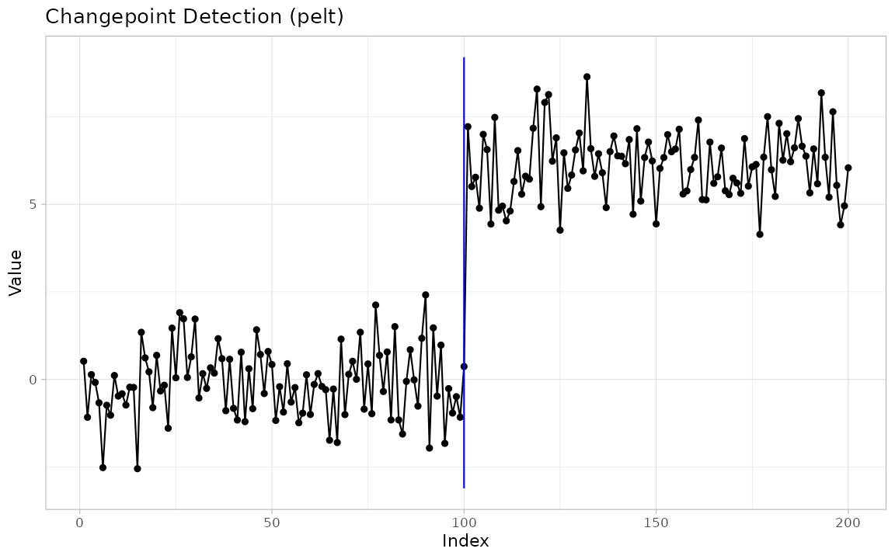
Unified detection
cpt_detect() is the recommended entry point: pick a
method, say what the change is in (change_in =
"mean", "var", "meanvar",
"slope", or "distribution"), and optionally
set a penalty. Incompatible
method/change_in combinations error — they are
never silently substituted.
cpt_detect(x, method = "binseg", change_in = "mean")
#> ggcpt (changepoint detection result)
#> Method: binseg
#> Change in: mean
#> Changepoints found: 1
#> CP convention: left
#> Penalty: MBIC = NA
#> Series length: 200
#>
#> Changepoints:
#> # A tibble: 1 × 2
#> cp cp_value
#> <int> <dbl>
#> 1 100 0.369cpt_methods() is the live capability table: every method
the package knows, its engine package, what it can detect, and whether
the engine is installed.
cpt_methods()
#> # A tibble: 35 × 6
#> method change_in engine status target_release installed
#> <chr> <chr> <chr> <chr> <chr> <lgl>
#> 1 pelt mean, var, meanvar changep… avail… NA TRUE
#> 2 binseg mean, var, meanvar changep… avail… NA TRUE
#> 3 segneigh mean, var, meanvar changep… avail… NA TRUE
#> 4 amoc mean, var, meanvar changep… avail… NA TRUE
#> 5 np distribution changep… avail… NA TRUE
#> 6 ecp distribution (multivariate) ecp avail… NA TRUE
#> 7 fpop mean fpop avail… NA TRUE
#> 8 wbs mean wbs avail… NA TRUE
#> 9 wbs2 mean breakfa… avail… NA TRUE
#> 10 not mean, var, slope not avail… NA TRUE
#> # ℹ 25 more rowscpt_penalty() constructs standard penalty values for the
engines that take numeric penalties; see its help for the per-engine
penalty semantics.
cpt_penalty("BIC", n = 200)
#> [1] 5.298317
cpt_penalty("MBIC", n = 200)
#> [1] 10.59663
cpt_penalty("Manual", value = 10)
#> [1] 10Engine wrappers
Each engine also has a direct wrapper exposing its native arguments.
All return the same ggcpt object.
The classical wave
cpt_wrapper() and ecp_wrapper() are the
original 0.1.0 interface to the
changepoint/changepoint.np (Killick et al. 2012; Killick and Eckley 2014; Haynes
et al. 2017) and ecp (Matteson
and James 2014; James and Matteson 2014) engines; they return
bare tibbles for backward compatibility.
cpt_wrapper(x, change_in = "mean", cp_method = "PELT")
#> # A tibble: 1 × 2
#> cp cp_value
#> <int> <dbl>
#> 1 100 0.369
ecp_wrapper(x, algorithm = "divisive", seed = 1)
#> # A tibble: 1 × 2
#> cp cp_value
#> <dbl> <dbl>
#> 1 101 7.22The search and pruning engines added in 0.2.0 (Fryzlewicz 2014, 2022; Baranowski et al. 2019; Eichinger and Kirch 2018; Anastasiou and Fryzlewicz 2022; Maidstone et al. 2017), one call each:
fpop_wrapper(x, penalty = 2 * log(length(x)))
#> ggcpt (changepoint detection result)
#> Method: fpop
#> Change in: mean
#> Changepoints found: 1
#> CP convention: left
#> Penalty: Manual = 10.5966347330961
#> Series length: 200
#>
#> Changepoints:
#> # A tibble: 1 × 2
#> cp cp_value
#> <int> <dbl>
#> 1 100 0.369
wbs_wrapper(x, n_intervals = 2000, seed = 1)
#> ggcpt (changepoint detection result)
#> Method: wbs
#> Change in: mean
#> Changepoints found: 1
#> CP convention: left
#> Penalty: sSIC = NA
#> Series length: 200
#>
#> Changepoints:
#> # A tibble: 1 × 2
#> cp cp_value
#> <int> <dbl>
#> 1 100 0.369
wbs2_wrapper(x)
#> ggcpt (changepoint detection result)
#> Method: wbs2
#> Change in: mean
#> Changepoints found: 1
#> CP convention: left
#> Penalty: SDLL = NA
#> Series length: 200
#>
#> Changepoints:
#> # A tibble: 1 × 2
#> cp cp_value
#> <int> <dbl>
#> 1 100 0.369
not_wrapper(x, contrast = "pcwsConstMean", seed = 1)
#> ggcpt (changepoint detection result)
#> Method: not
#> Change in: mean
#> Changepoints found: 1
#> CP convention: left
#> Penalty: sSIC = NA
#> Series length: 200
#>
#> Changepoints:
#> # A tibble: 1 × 2
#> cp cp_value
#> <int> <dbl>
#> 1 100 0.369
mosum_wrapper(x)
#> ggcpt (changepoint detection result)
#> Method: mosum
#> Change in: mean
#> Changepoints found: 1
#> CP convention: left
#> Penalty: threshold = 3.63416800924526
#> Series length: 200
#>
#> Changepoints:
#> # A tibble: 1 × 2
#> cp cp_value
#> <int> <dbl>
#> 1 100 0.369
mosum_wrapper(x3, multiscale = TRUE)
#> ggcpt (changepoint detection result)
#> Method: mosum
#> Change in: mean
#> Changepoints found: 2
#> CP convention: left
#> Penalty: threshold = NA
#> Series length: 300
#>
#> Changepoints:
#> # A tibble: 2 × 2
#> cp cp_value
#> <int> <dbl>
#> 1 100 -0.100
#> 2 200 2.90
idetect_wrapper(x, seed = 1)
#> ggcpt (changepoint detection result)
#> Method: idetect
#> Change in: mean
#> Changepoints found: 1
#> CP convention: left
#> Penalty: threshold = NA
#> Series length: 200
#>
#> Changepoints:
#> # A tibble: 1 × 2
#> cp cp_value
#> <int> <dbl>
#> 1 100 0.369
tguh_wrapper(x)
#> ggcpt (changepoint detection result)
#> Method: tguh
#> Change in: mean
#> Changepoints found: 1
#> CP convention: left
#> Penalty: sSIC = NA
#> Series length: 200
#>
#> Changepoints:
#> # A tibble: 1 × 2
#> cp cp_value
#> <int> <dbl>
#> 1 100 0.369The 0.4.0 wave
Multiscale inference with confidence. SMUCE (Frick et al. 2014) and its heteroskedastic
extension HSMUCE (Pein et al. 2017)
control the probability of over-estimating the number of changes and
return a confidence interval for every changepoint location
(ci_lower/ci_upper):
res_smuce <- smuce_wrapper(x, alpha = 0.5)
tidy(res_smuce)
#> # A tibble: 1 × 4
#> cp cp_value ci_lower ci_upper
#> <int> <dbl> <int> <int>
#> 1 100 0.369 100 100Change in slope. CPOP performs exact penalised estimation of a continuous piecewise-linear mean (Fearnhead et al. 2019; Fearnhead and Grose 2024):
y_slope <- cumsum(c(rep(0.4, 100), rep(-0.3, 100))) + rnorm(200)
res_cpop <- cpop_wrapper(y_slope)
tidy(res_cpop)
#> # A tibble: 1 × 2
#> cp cp_value
#> <int> <dbl>
#> 1 100 39.5Bayesian detection. bcp_wrapper()
implements the Barry–Hartigan product-partition model (Barry and Hartigan 1993; Erdman and Emerson
2007) and reports a posterior probability per location;
bocpd_wrapper() runs Bayesian online changepoint detection
over the run-length posterior (Adams and MacKay
2007); beast_wrapper() wraps the BEAST Bayesian
model-averaging ensemble (Zhao et al. 2019):
res_bcp <- bcp_wrapper(x, seed = 1)
tidy(res_bcp)
#> # A tibble: 1 × 3
#> cp cp_value posterior_prob
#> <int> <dbl> <dbl>
#> 1 100 0.369 1
res_bocpd <- bocpd_wrapper(x)
tidy(res_bocpd)
#> # A tibble: 1 × 2
#> cp cp_value
#> <int> <dbl>
#> 1 100 0.369
res_beast <- beast_wrapper(x, seed = 1)
tidy(res_beast)
#> # A tibble: 1 × 3
#> cp cp_value posterior_prob
#> <int> <dbl> <dbl>
#> 1 100 0.369 1Sequential and kernel nonparametrics.
cpm_wrapper() runs distribution-free sequential tests and
reports when each change would have been detected in a stream
(Ross 2015); kcp_wrapper()
applies kernel change point analysis to running statistics (mean,
variance, autocorrelation, correlation) (Arlot et
al. 2019; Cabrieto et al. 2018); npmojo_wrapper()
detects distributional changes under serial dependence (McGonigle and Cho 2025):
tidy(cpm_wrapper(x, cpm_type = "Mann-Whitney"))
#> # A tibble: 3 × 3
#> cp cp_value detection_time
#> <int> <dbl> <int>
#> 1 23 -1.39 30
#> 2 50 0.426 67
#> 3 100 0.369 104
tidy(kcp_wrapper(x, running_stat = "mean", nperm = 100, seed = 1))
#> # A tibble: 1 × 2
#> cp cp_value
#> <int> <dbl>
#> 1 101 7.22
tidy(npmojo_wrapper(x))
#> # A tibble: 2 × 2
#> cp cp_value
#> <int> <dbl>
#> 1 100 0.369
#> 2 122 8.13Robustness to drift and dependence. DeCAFS detects abrupt changes when the signal also drifts and the noise is autocorrelated (Romano et al. 2022); self-normalised segmentation avoids long-run variance estimation entirely (Zhao et al. 2022); EnvCpt only reports changepoints when a changepoint model beats trend and autoregressive alternatives (Beaulieu and Killick 2018):
tidy(decafs_wrapper(x))
#> # A tibble: 1 × 2
#> cp cp_value
#> <int> <dbl>
#> 1 100 0.369
tidy(sn_wrapper(x3, parameter = "mean"))
#> # A tibble: 2 × 2
#> cp cp_value
#> <int> <dbl>
#> 1 100 -0.100
#> 2 199 5.53
res_env <- envcpt_wrapper(x, models = c("mean", "meancpt", "trendcpt"))
tidy(res_env)
#> # A tibble: 1 × 2
#> cp cp_value
#> <int> <dbl>
#> 1 100 0.369
res_env$penalty$type # which model won
#> [1] "AIC: meancpt"High-dimensional and multivariate.
inspect_wrapper() finds sparse mean changes by projection
(Wang and Samworth 2018);
ocd_wrapper() monitors a high-dimensional stream online
(Chen et al. 2022);
geomcp_wrapper() maps each observation to a distance and an
angle and segments both (Grundy et al.
2020); multivariate ecp input flows through
cpt_detect() unchanged.
set.seed(1)
X <- cbind(a = c(rnorm(80), rnorm(80, 4)),
b = c(rnorm(80), rnorm(80, -3)),
c = rnorm(160))
res_hd <- inspect_wrapper(X)
tidy(res_hd)
#> # A tibble: 1 × 3
#> cp cp_value strength
#> <int> <dbl> <dbl>
#> 1 80 -0.590 30.8
# Online high-dimensional detection; Monte Carlo threshold calibration makes
# this the slowest wrapper, so it is shown but not run here.
res_ocd <- ocd_wrapper(X, mc_reps = 100)
tidy(res_ocd)
tidy(geomcp_wrapper(X))
#> # A tibble: 0 × 2
#> # ℹ 2 variables: cp <int>, cp_value <dbl>Regression structure.
strucchange_wrapper() dates Bai–Perron breaks with
confidence intervals (Bai and Perron 1998, 2003;
Zeileis et al. 2002) and accepts either a bare series or a
formula; segmented_wrapper() fits continuous broken-line
regressions with breakpoint standard errors (Muggeo 2003, 2008):
tidy(strucchange_wrapper(x))
#> # A tibble: 1 × 4
#> cp cp_value ci_lower ci_upper
#> <int> <dbl> <int> <int>
#> 1 100 0.369 99 101
tidy(segmented_wrapper(y_slope, npsi = 1, seed = 1))
#> # A tibble: 1 × 4
#> cp cp_value ci_lower ci_upper
#> <int> <dbl> <int> <int>
#> 1 100 39.5 98 101The modern PELT family.
fastcpd_wrapper() exposes the fastcpd engine —
mean, variance, mean-and-variance, and AR/ARMA/GARCH model changepoints
under one interface (Li and Zhang
2024):
tidy(fastcpd_wrapper(x, family = "mean"))
#> # A tibble: 1 × 2
#> cp cp_value
#> <int> <dbl>
#> 1 100 0.369The penalty path
Rather than guessing one penalty, cpt_crops() computes
every optimal segmentation over a penalty interval (the CROPS
algorithm, via changepoint (Killick and
Eckley 2014)) and returns a ggcpt_path with its own
print(), tidy(), and three plots:
path <- cpt_crops(x3)
path
#> ggcpt_path (CROPS penalty path)
#> Change in: mean
#> Penalty range: [5.704, 57.04]
#> Series length: 300
#> Distinct segmentations: 5
#>
#> # A tibble: 5 × 3
#> penalty n_cpts cost
#> <dbl> <int> <dbl>
#> 1 6.69 2 327.
#> 2 6.27 5 307.
#> 3 6.19 8 288.
#> 4 5.76 9 282.
#> 5 5.70 10 276.
tidy(path)
#> # A tibble: 5 × 4
#> penalty n_cpts cost cpts
#> <dbl> <int> <dbl> <list>
#> 1 6.69 2 327. <int [2]>
#> 2 6.27 5 307. <int [5]>
#> 3 6.19 8 288. <int [8]>
#> 4 5.76 9 282. <int [9]>
#> 5 5.70 10 276. <int [10]>
autoplot(path) # the cost elbow
autoplot(path, type = "path") # changepoints vs penalty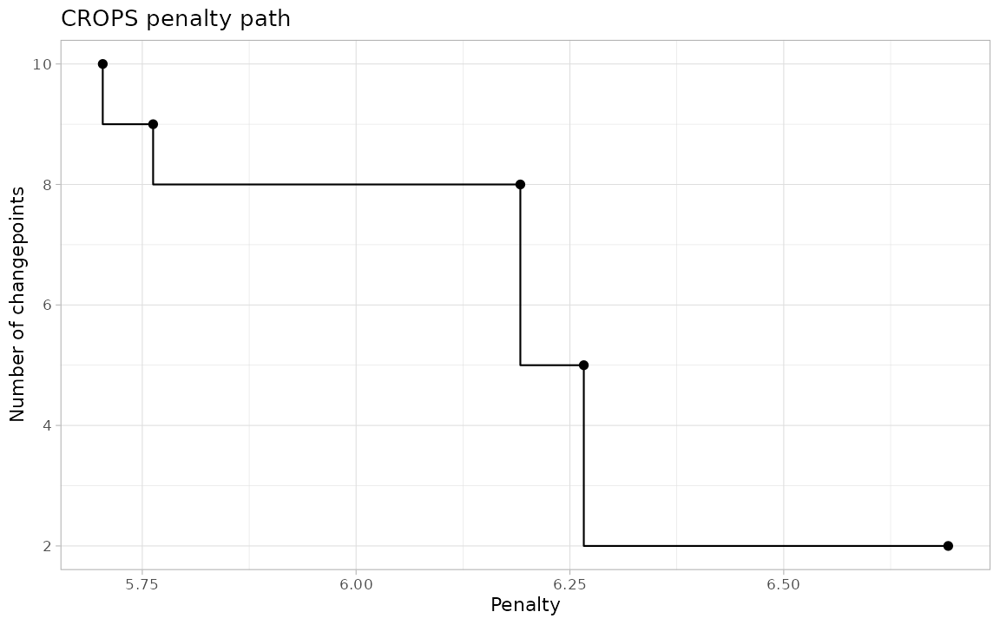
autoplot(path, type = "segmentations") # the candidate models themselves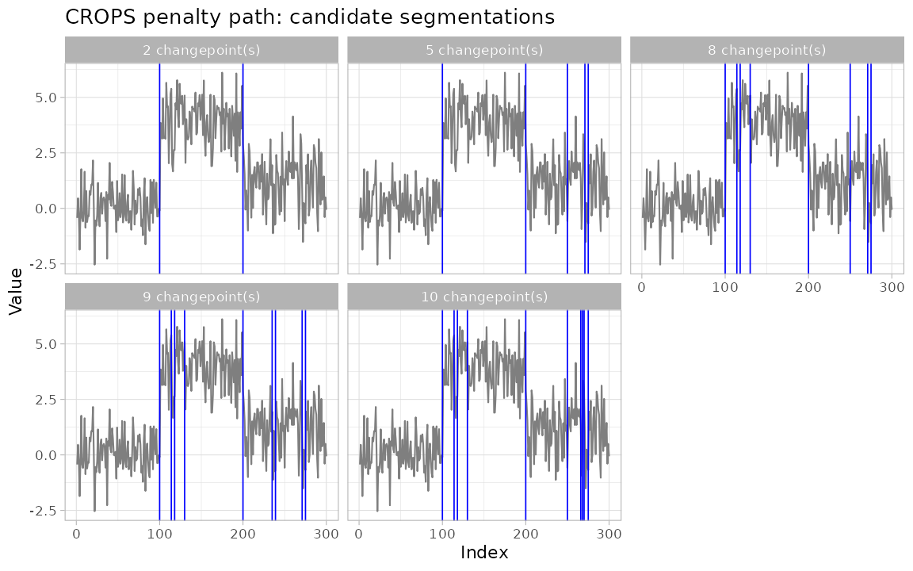
The visualization layer
autoplot() renders any ggcpt. Options:
show_segments (fitted segment means), show_fit
(the engine’s own fitted signal, where provided — SMUCE, DeCAFS, CPOP,
segmented, bcp, BEAST), show_ci (changepoint-location
confidence intervals, where provided — SMUCE/HSMUCE, strucchange,
segmented), show_points/show_line, and the
cptline_* styling arguments (cptline_color,
cptline_alpha, cptline_type,
cptline_linewidth).
autoplot(res, show_segments = TRUE, cptline_color = "firebrick",
cptline_type = "dashed", cptline_linewidth = 0.8)
autoplot(res_smuce, show_ci = TRUE, show_fit = TRUE)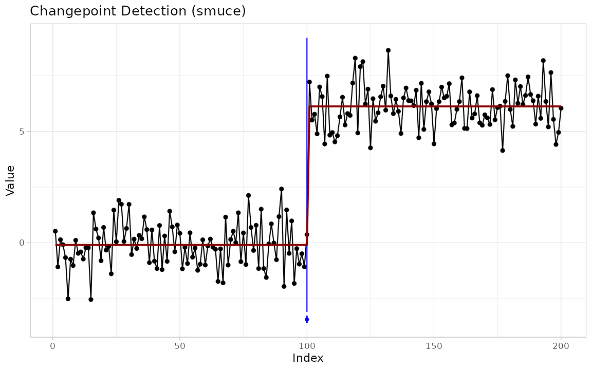
Multivariate results facet automatically:
autoplot(res_hd)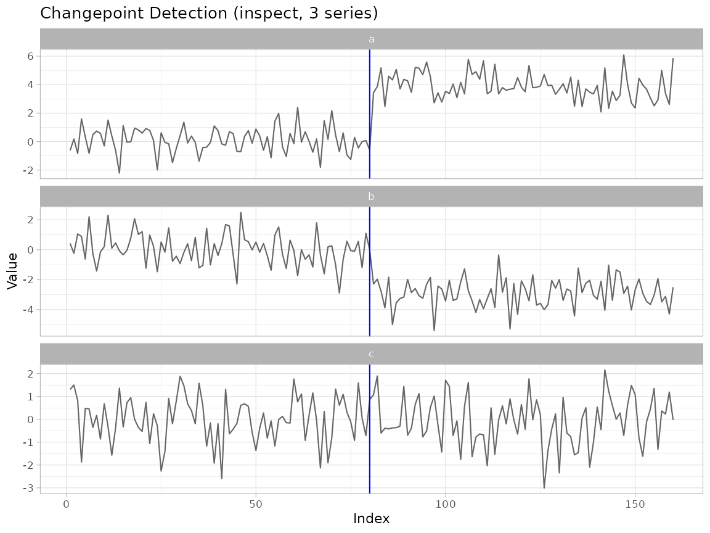
The composable layers work inside any ggplot pipeline:
geom_changepoint() draws vertical rules,
geom_cpt_segment() draws segment levels,
geom_cpt_ci() draws horizontal interval whiskers, and
stat_changepoint() runs detection inside the plot.
theme_ggcpt() is a publication theme and
annotate_segments() shades alternating segments.
cp_tbl <- tidy(res)
df <- data.frame(index = seq_along(x), value = x)
ggplot(df, aes(index, value)) +
annotate_segments(cp = cp_tbl$cp, n = length(x)) +
geom_line() +
geom_changepoint(data = cp_tbl, aes(xintercept = cp), color = "red") +
geom_cpt_segment(
data = res$segments,
aes(x = start, xend = end, y = param_estimate, yend = param_estimate),
inherit.aes = FALSE, color = "darkred", linewidth = 1
) +
theme_ggcpt()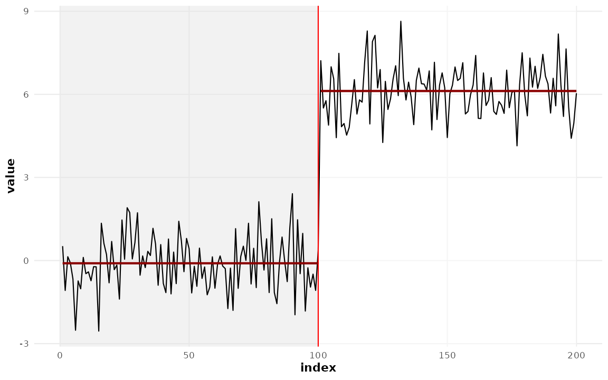
ggplot(df, aes(index, value)) +
geom_line() +
stat_changepoint(method = "pelt", color = "blue")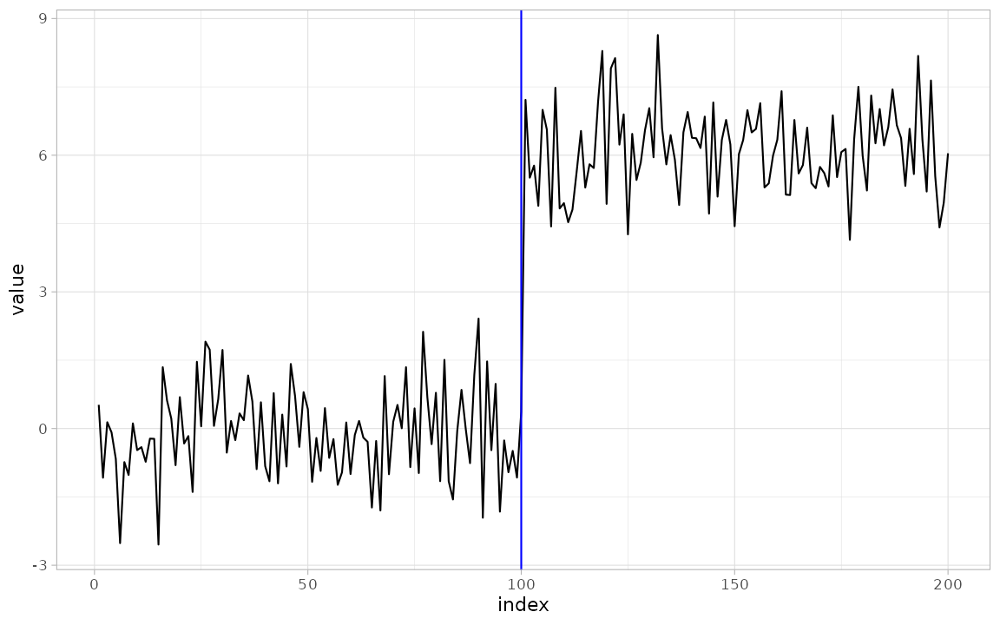
ci_tbl <- tidy(res_smuce)
ci_tbl$y_pos <- min(x) - 1
ggplot(df, aes(index, value)) +
geom_line(color = "grey60") +
geom_cpt_ci(
data = ci_tbl,
aes(y = y_pos, xmin = ci_lower, xmax = ci_upper),
width = 0.6, color = "blue", inherit.aes = FALSE
) +
geom_changepoint(data = ci_tbl, aes(xintercept = cp), color = "blue")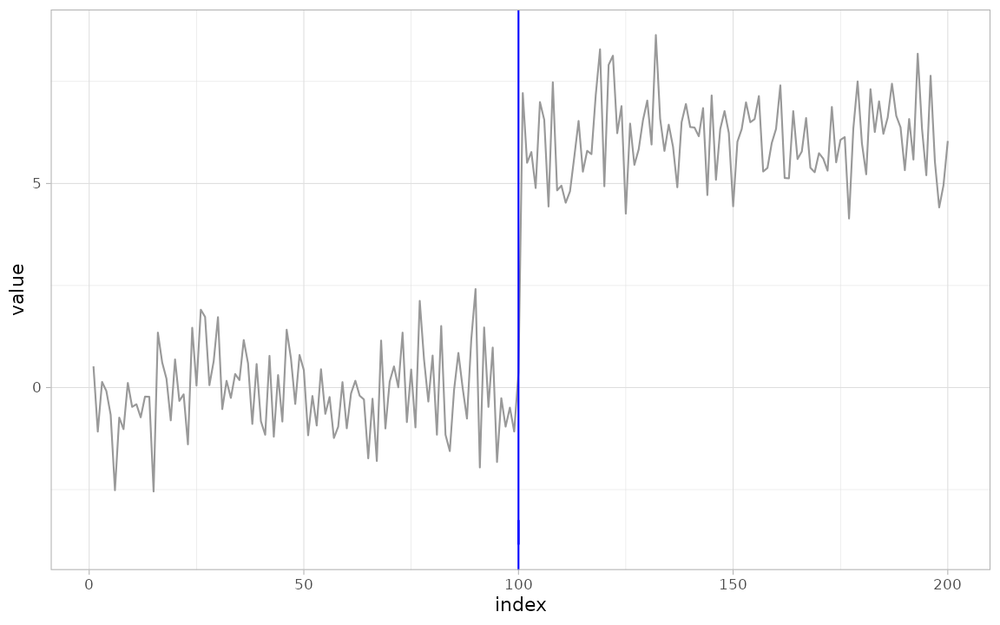
ggcptplot() and ggecpplot() are the
original one-call plots for the two classical engines:
ggcptplot(x, change_in = "mean", cp_method = "PELT")
ggecpplot(x, algorithm = "divisive", seed = 1)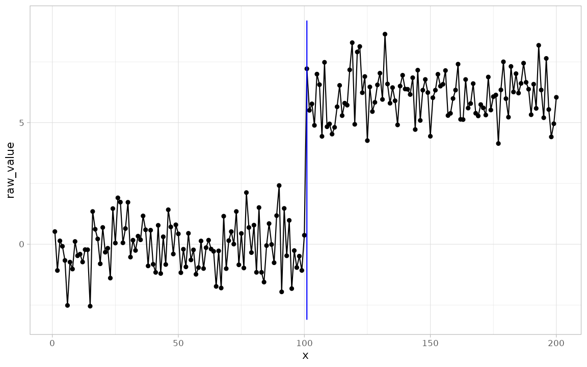
The Bayesian engines get the field’s signature displays:
ggcpt_posterior() shows the posterior mean over the series
and the per-location changepoint probability;
ggcpt_runlength() shows the BOCPD run-length posterior as a
heatmap.
ggcpt_posterior(res_bcp)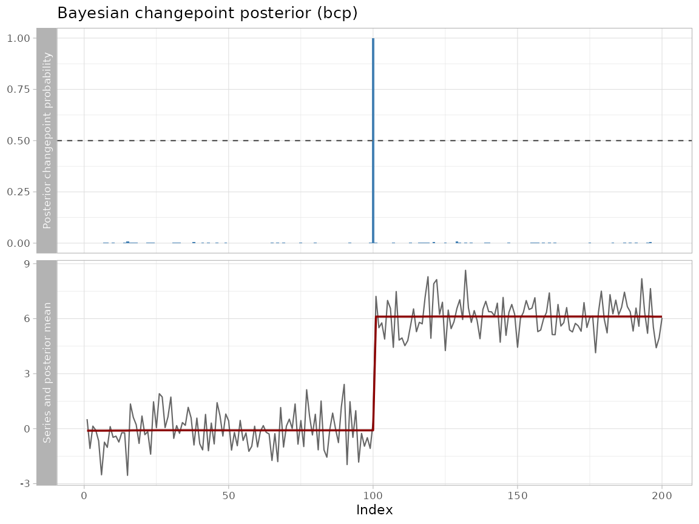
ggcpt_runlength(res_bocpd)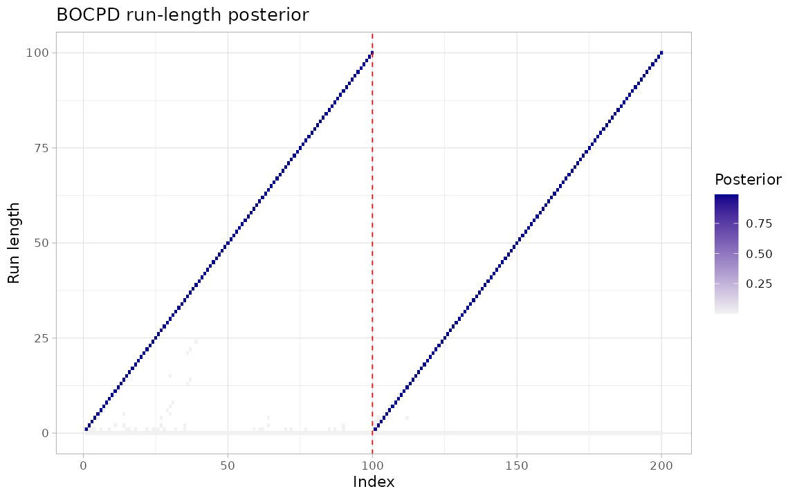
Finally, ggcpt_interactive() turns any result (or ggplot
built from one) into a plotly widget with values on
hover:
ggcpt_interactive(res) # requires plotly; opens an htmlwidgetComparing methods
ggcpt_compare() runs several detectors on the same
series and renders them faceted (default) or overlaid;
ggcpt_compare_table() returns the tidy union. Both honour
future::plan() for parallel execution.
ggcpt_compare(x, methods = c("pelt", "binseg", "amoc"))
ggcpt_compare(x, methods = c("pelt", "binseg"), layout = "overlay")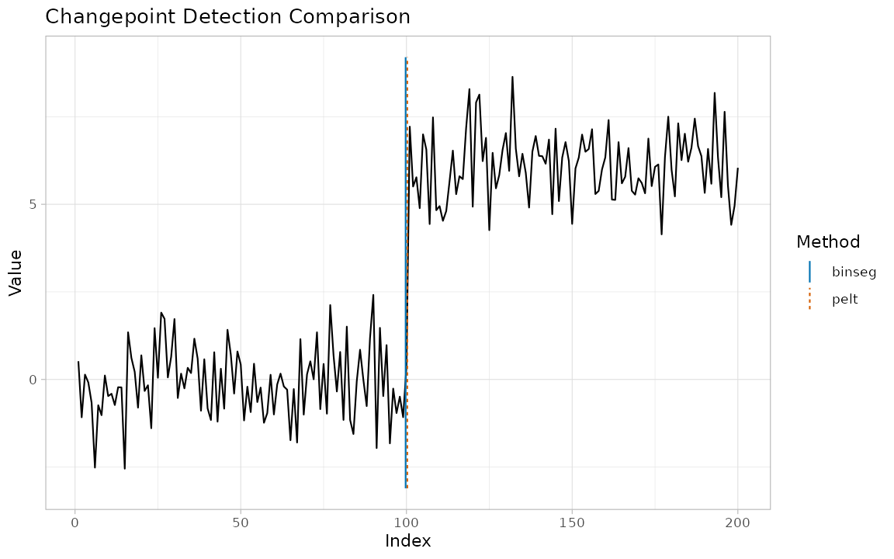
ggcpt_compare_table(x, methods = c("pelt", "binseg", "amoc"))
#> # A tibble: 3 × 3
#> method cp cp_value
#> <chr> <int> <dbl>
#> 1 pelt 100 0.369
#> 2 binseg 100 0.369
#> 3 amoc 100 0.369Batch detection and stability
cpt_batch() runs one detector over many series (matrix,
data frame, or list of vectors) and returns a tidy
ggcpt_batch tibble with list-columns:
XB <- cbind(shifted = x, pure_noise = rnorm(200))
batch <- cpt_batch(XB, method = "pelt")
batch
#> ggcpt_batch (2 series, method: pelt)
#>
#> # A tibble: 2 × 2
#> series n_changepoints
#> <chr> <int>
#> 1 shifted 1
#> 2 pure_noise 0
tidy(batch)
#> # A tibble: 1 × 3
#> series cp cp_value
#> <chr> <int> <dbl>
#> 1 shifted 100 0.369
autoplot(batch)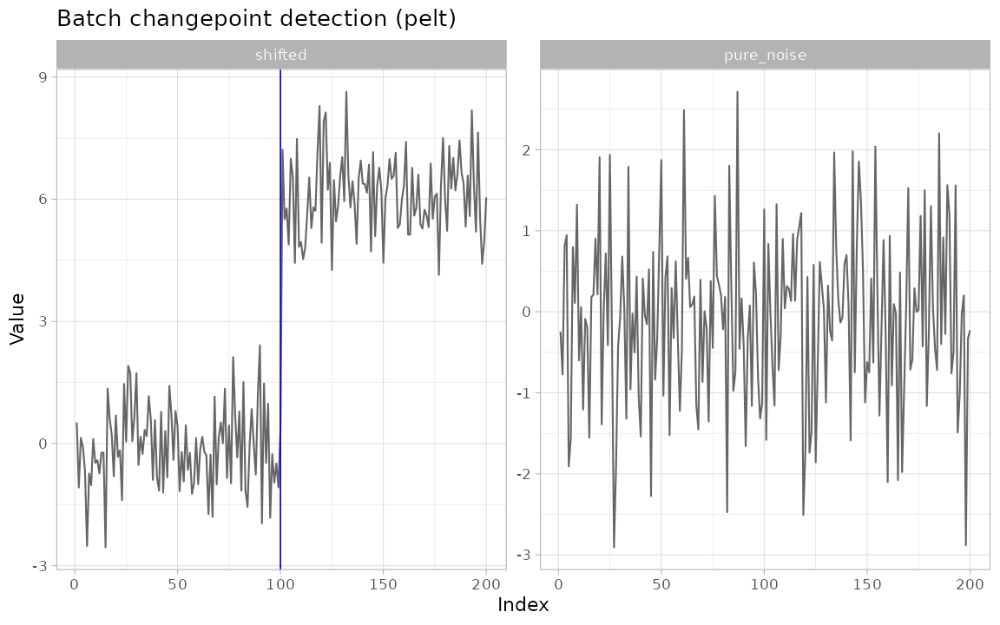
cpt_stability() quantifies how fragile a segmentation
is: it resamples residuals within the fitted segments, re-runs the
detector, and reports the re-detection frequency at every location — a
model-agnostic confidence signal for engines with no native
intervals:
st <- cpt_stability(x, method = "pelt", B = 30, seed = 1)
st
#> ggcpt_stability (30 bootstrap replicates, method: pelt)
#>
#> Original changepoints and their re-detection frequency:
#> # A tibble: 1 × 2
#> cp stability
#> <int> <dbl>
#> 1 100 1
autoplot(st)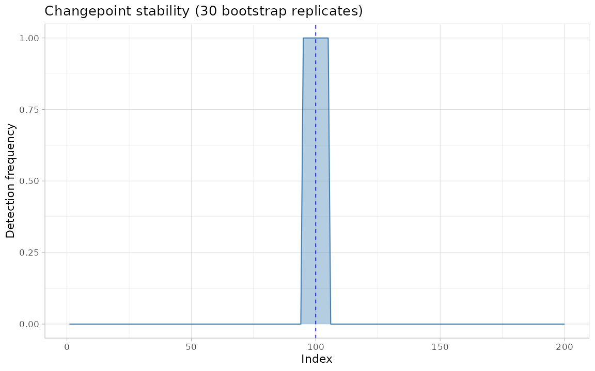
Evaluation against ground truth
cpt_metrics() scores predictions against a known truth:
precision, recall and F1 under one-to-one matching, the covering metric
and adjusted Rand index in the conventions of van den Burg and Williams
(2020), Hausdorff distance, annotation error, and matched
MAE/RMSE. cpt_metrics_annotated() averages over multiple
annotators, and ggcpt_eval() draws the agreement (true
positives, false positives, and misses):
truth <- c(100)
pred <- tidy(res)$cp
cpt_metrics(pred, truth, n = length(x), margin = 5)
#> # A tibble: 1 × 12
#> n n_pred n_truth precision recall f1 covering hausdorff rand_index
#> <int> <int> <int> <dbl> <dbl> <dbl> <dbl> <dbl> <dbl>
#> 1 200 1 1 1 1 1 1 0 1
#> # ℹ 3 more variables: annotation_error <int>, mae_matched <dbl>,
#> # rmse_matched <dbl>
cpt_metrics_annotated(pred, list(c(100), c(101), c(99)), n = length(x))
#> # A tibble: 1 × 7
#> n n_annotators n_pred precision recall f1 covering
#> <int> <int> <int> <dbl> <dbl> <dbl> <dbl>
#> 1 200 3 1 1 1 1 0.993
ggcpt_eval(pred, truth, x, margin = 5)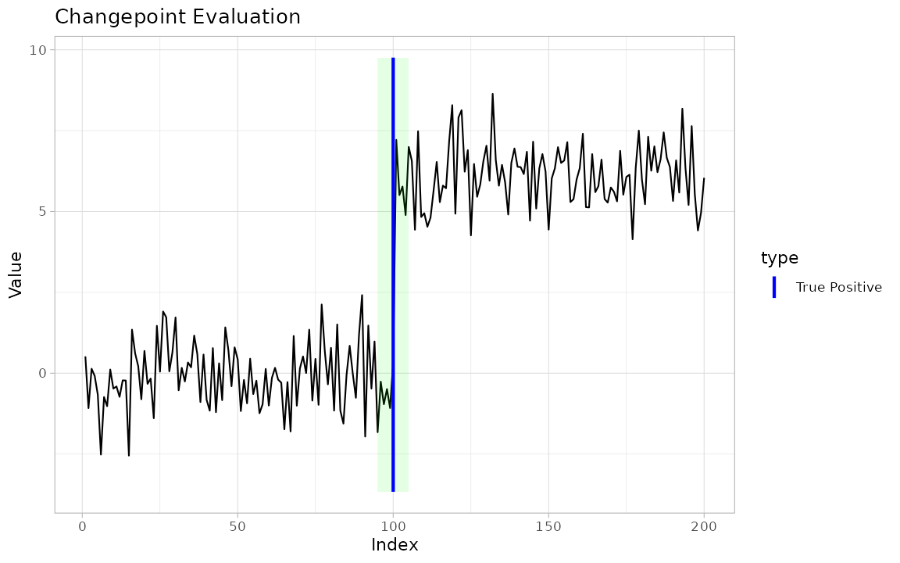
Simulation and canonical signals
cpt_simulate() (alias rcpt()) generates
series with known changepoints in mean, variance, both, or slope, under
Gaussian, Student-t, AR(1), or random-walk noise; the truth is carried
in attributes. Five canonical test signals from the literature ship
ready-made: signal_blocks() (the Donoho–Johnstone blocks
signal (Donoho and Johnstone 1994)),
signal_fms(), signal_mix(),
signal_teeth(), and signal_stairs().
sim <- cpt_simulate(300, changepoints = c(100, 200), change_in = "mean",
params = c(0, 5, 1), seed = 1)
attr(sim, "true_changepoints")
#> [1] 100 200
sim2 <- rcpt(300, changepoints = 150, params = c(0, 3), seed = 2)
blocks <- signal_blocks(1024, seed = 1)
fms <- signal_fms(500, seed = 1)
mix <- signal_mix(500, seed = 1)
teeth <- signal_teeth(400, seed = 1)
stairs <- signal_stairs(500, seed = 1)
ggplot(blocks, aes(index, value)) +
geom_line(color = "grey50") +
geom_vline(xintercept = attr(blocks, "true_changepoints"),
color = "blue", linewidth = 0.3) +
labs(title = "The blocks test signal with its true changepoints")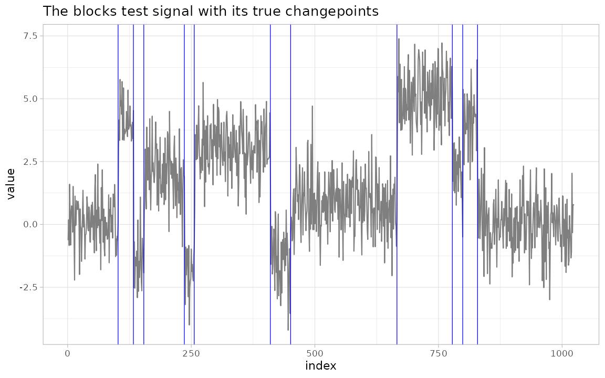
Citing the methodology
cpt_cite() returns the verified reference(s) behind a
result or a method name, so a write-up can cite the right paper without
leaving R:
cpt_cite("pelt")
#> [pelt] Killick, R., Fearnhead, P. and Eckley, I. A. (2012). Optimal detection of changepoints with a linear computational cost. Journal of the American Statistical Association, 107(500), 1590-1598.
cpt_cite(res)
#> [pelt] Killick, R., Fearnhead, P. and Eckley, I. A. (2012). Optimal detection of changepoints with a linear computational cost. Journal of the American Statistical Association, 107(500), 1590-1598.Closing note
This tour visited every exported function once. For the framework’s
design, the mathematics of the wrapped methods, and worked analyses, see
vignette("introduction", package = "ggchangepoint"); for
method comparison and accuracy evaluation in depth, see
vignette("comparison", package = "ggchangepoint").